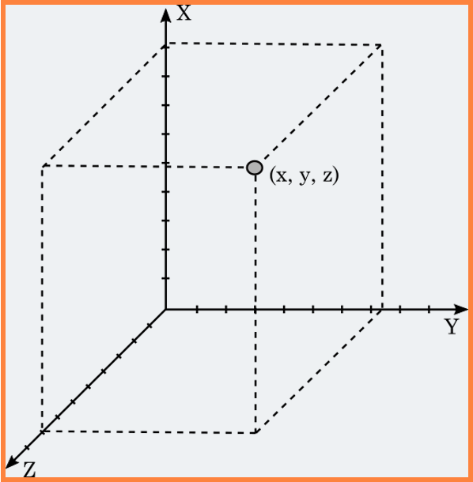

<!DOCTYPE html>
<html lang="en">
  <head>
    <meta charset="utf-8" />
    <meta name="viewport" content="width=device-width, initial-scale=1.0, maximum-scale=1.0, user-scalable=no" />

    <title></title>
    <link rel="stylesheet" href="dist/reveal.css" />
    <link rel="stylesheet" href="dist/theme/iph.css" id="theme" />
    <link rel="stylesheet" href="plugin/highlight/spyder.css" />
	<link rel="stylesheet" href="css/layout.css" />
	<link rel="stylesheet" href="plugin/customcontrols/style.css">


    <script defer src="dist/fontawesome/all.min.js"></script>

	<script type="text/javascript">
		var forgetPop = true;
		function onPopState(event) {
			if(forgetPop){
				forgetPop = false;
			} else {
				parent.postMessage(event.target.location.href, "app://obsidian.md");
			}
        }
		window.onpopstate = onPopState;
		window.onmessage = event => {
			if(event.data == "reload"){
				window.document.location.reload();
			}
			forgetPop = true;
		}

		function fitElements(){
			const itemsToFit = document.getElementsByClassName('fitText');
			for (const item in itemsToFit) {
				if (Object.hasOwnProperty.call(itemsToFit, item)) {
					var element = itemsToFit[item];
					fitElement(element,1, 1000);
					element.classList.remove('fitText');
				}
			}
		}

		function fitElement(element, start, end){

			let size = (end + start) / 2;
			element.style.fontSize = `${size}px`;

			if(Math.abs(start - end) < 1){
				while(element.scrollHeight > element.offsetHeight){
					size--;
					element.style.fontSize = `${size}px`;
				}
				return;
			}

			if(element.scrollHeight > element.offsetHeight){
				fitElement(element, start, size);
			} else {
				fitElement(element, size, end);
			}		
		}


		document.onreadystatechange = () => {
			fitElements();
			if (document.readyState === 'complete') {
				if (window.location.href.indexOf("?export") != -1){
					parent.postMessage(event.target.location.href, "app://obsidian.md");
				}
				if (window.location.href.indexOf("print-pdf") != -1){
					let stateCheck = setInterval(() => {
						clearInterval(stateCheck);
						window.print();
					}, 250);
				}
			}
	};


        </script>
  </head>
  <body>
    <div class="reveal">
      <div class="slides"><section  data-markdown><script type="text/template"><!-- .slide: class="has-light-background drop" data-background-color="#f8f8f8" -->
<div class="" style="position: absolute; left: 0px; top: 0px; height: 700px; width: 960px; min-height: 700px; display: flex; flex-direction: column; align-items: center; justify-content: center" absolute="true">

### <i class="fas fa-award"></i> IP Honores

#### _Laboratorio 1 de Nivel 4 - N4-L1_

[Eduardo Rosales](mailto:ee.rosales24@uniandes.edu.co)

Departamento de Ingeniería de Sistemas y Computación

Universidad de los Andes
</div></script></section><section  data-markdown><script type="text/template"><!-- .slide: class="has-light-background drop" data-background-color="#f8f8f8" -->
<div class="" style="position: absolute; left: 0px; top: 0px; height: 700px; width: 960px; min-height: 700px; display: flex; flex-direction: column; align-items: center; justify-content: center" absolute="true">

### Siga paso a paso las siguientes instrucciones
</div></script></section><section  data-markdown><script type="text/template"><!-- .slide: class="has-light-background drop" data-background-color="#f8f8f8" -->
<div class="" style="position: absolute; left: 0px; top: 0px; height: 700px; width: 960px; min-height: 700px; display: flex; flex-direction: column; align-items: center; justify-content: center" absolute="true">

### Trabajo individual

- Este laboratorio debe realizarse de forma
    
    - **Completamente individual**<!-- .element: class="fragment highlight-red" -->
    
    <br>
    
- El tiempo para terminar el laboratorio es muy corto
    
    - Es un laboratorio _retante y muy extenso_ <!-- .element: class="fragment highlight-green" -->
        - Por favor:
            - Evite las distracciones
            - Guarde **silencio**<!-- .element: class="fragment highlight-blue" -->

	<br>
	
- Si no termina el laboratorio
    
    - Debe finalizarlo (**y comprenderlo**)<!-- .element: class="fragment highlight-green" -->
        - En las 5h
            - De trabajo individual semanal
</div></script></section><section  data-markdown><script type="text/template"><!-- .slide: class="has-light-background drop" data-background-color="#f8f8f8" -->
<div class="" style="position: absolute; left: 0px; top: 0px; height: 700px; width: 960px; min-height: 700px; display: flex; flex-direction: column; align-items: center; justify-content: center" absolute="true">

### Preguntas

- En caso de dudas, por favor:

<br> 

1. Formule su pregunta de forma **muy clara y concisa**

<br>

2. Luego (**y solo luego de esto**)
    - Levante la mano

<br>

<i class="fas fa-question-circle fa-1x fa-spin fa-1x"></i> _Al plantearse correctamente la pregunta, la respuesta a veces se revela sola_
</div></script></section><section  data-markdown><script type="text/template"><!-- .slide: class="has-light-background drop" data-background-color="#f8f8f8" -->
<div class="" style="position: absolute; left: 0px; top: 0px; height: 700px; width: 960px; min-height: 700px; display: flex; flex-direction: column; align-items: center; justify-content: center" absolute="true">

### Objetivos del laboratorio

- Al finalizar este laboratorio, usted debe saber:
    - **Empaquetar** valores en una tupla
    - **Desempaquetar** una tupla en variables
    - **Pasar tuplas** como parámetros a una función
    - **Retornar una tupla** desde una función
        - Es decir, retornar múltiples valores
    - Aprovechar la **inmutabilidad** de las tuplas
</div></script></section><section  data-markdown><script type="text/template"><!-- .slide: class="has-light-background drop" data-background-color="#f8f8f8" -->
<div class="" style="position: absolute; left: 0px; top: 0px; height: 700px; width: 960px; min-height: 700px; display: flex; flex-direction: column; align-items: center; justify-content: center" absolute="true">

### Actividad I
</div></script></section><section  data-markdown><script type="text/template"><!-- .slide: class="has-light-background drop" data-background-color="#f8f8f8" -->
<div class="" style="position: absolute; left: 0px; top: 0px; height: 700px; width: 960px; min-height: 700px; display: flex; flex-direction: column; align-items: center; justify-content: center" absolute="true">

### Repasemos el empaquetado y el desempaquetado
</div></script></section><section  data-markdown><script type="text/template"><!-- .slide: class="has-light-background drop" data-background-color="#f8f8f8" -->
<div class="" style="position: absolute; left: 0px; top: 0px; height: 700px; width: 960px; min-height: 700px; display: flex; flex-direction: column; align-items: center; justify-content: center" absolute="true">

### 🌀 Empaquetado y desempaquetado 🌀

- **Empaquetado:** agrupar varios valores en una tupla:

```Python
punto = (3, 7)  # Empaquetado explícito (con paréntesis)

punto = 3, 7    # Empaquetado implícito (sin paréntesis)
```

<br>
	
- **Desempaquetado:** extraer los valores de una tupla en variables:

```Python
x, y = punto  # x = 3, y = 7
```
</div></script></section><section  data-markdown><script type="text/template"><!-- .slide: class="has-light-background drop" data-background-color="#f8f8f8" -->
<div class="" style="position: absolute; left: 0px; top: 0px; height: 700px; width: 960px; min-height: 700px; display: flex; flex-direction: column; align-items: center; justify-content: center" absolute="true">

### Para las siguientes preguntas

- Responda primero **en su mente** (o en sus notas)
    
    - Y solo después, avance a la diapositiva de la solución<br>
- Si lo desea, verifique luego su respuesta
    
    - Ejecutando el código en Spyder
</div></script></section><section  data-markdown><script type="text/template"><!-- .slide: class="has-light-background drop" data-background-color="#f8f8f8" -->
<div class="" style="position: absolute; left: 0px; top: 0px; height: 700px; width: 960px; min-height: 700px; display: flex; flex-direction: column; align-items: center; justify-content: center" absolute="true">

### Pregunta I

- ¿De qué tipo es cada una de las siguientes variables?

```Python
a = (5)

b = (5,)

c = 5,

d = ()

e = ('5')

f = tuple('57')

```
</div></script></section><section  data-markdown><script type="text/template"><!-- .slide: class="has-light-background drop" data-background-color="#f8f8f8" -->
<div class="" style="position: absolute; left: 0px; top: 0px; height: 700px; width: 960px; min-height: 700px; display: flex; flex-direction: column; align-items: center; justify-content: center" absolute="true">

### Pregunta I - Solución

```Python
a = (5)          # int: los paréntesis solos no crean una tupla

b = (5,)         # tuple: (5,)

c = 5,           # tuple: (5,) (empaquetado implícito)

d = ()           # tuple: () (tupla vacía)

e = ('5')        # str: '5' (de nuevo, falta la coma)

f = tuple('57')  # tuple: ('5', '7') (un ítem por cada carácter)
```

<br>

- Salvo en la tupla vacía
    - **La coma es la que crea la tupla**, no los paréntesis
</div></script></section><section  data-markdown><script type="text/template"><!-- .slide: class="has-light-background drop" data-background-color="#f8f8f8" -->
<div class="" style="position: absolute; left: 0px; top: 0px; height: 700px; width: 960px; min-height: 700px; display: flex; flex-direction: column; align-items: center; justify-content: center" absolute="true">

### Pregunta II

- ¿Cuál es el resultado de ejecutar el siguiente código?

```Python
punto = (3, 7)
x, y = punto
print(x, y)

x, y = y, x
print(x, y)

print(punto)
```
</div></script></section><section  data-markdown><script type="text/template"><!-- .slide: class="has-light-background drop" data-background-color="#f8f8f8" -->
<div class="" style="position: absolute; left: 0px; top: 0px; height: 700px; width: 960px; min-height: 700px; display: flex; flex-direction: column; align-items: center; justify-content: center" absolute="true">

### Pregunta II - Solución

```Python
punto = (3, 7)
x, y = punto
print(x, y)  # → 3 7

x, y = y, x
print(x, y)  # → 7 3

print(punto)  # → (3, 7)
```

- `x, y = y, x` intercambia los valores sin una variable auxiliar:
    1. A la derecha, se **empaqueta** la tupla `(7, 3)`
    2. A la izquierda, se **desempaqueta** en `x` y `y`
- `punto` no cambia:
    - `x` y `y` son variables independientes de la tupla
</div></script></section><section  data-markdown><script type="text/template"><!-- .slide: class="has-light-background drop" data-background-color="#f8f8f8" -->
<div class="" style="position: absolute; left: 0px; top: 0px; height: 700px; width: 960px; min-height: 700px; display: flex; flex-direction: column; align-items: center; justify-content: center" absolute="true">

### Pregunta III

- Analice cada línea **por separado**:
    - ¿Cuál funciona y cuál genera un error?

<br>

```Python
fecha = (12, 'noviembre', 2026)

dia, mes, anio = fecha        # Línea A

dia, mes = fecha              # Línea B

dia, mes, anio, hora = fecha  # Línea C
```
</div></script></section><section  data-markdown><script type="text/template"><!-- .slide: class="has-light-background drop" data-background-color="#f8f8f8" -->
<div class="" style="position: absolute; left: 0px; top: 0px; height: 700px; width: 960px; min-height: 700px; display: flex; flex-direction: column; align-items: center; justify-content: center" absolute="true">

### Pregunta III - Solución

```Python
fecha = (12, 'noviembre', 2026)

dia, mes, anio = fecha        # Línea A → ✅ dia = 12, mes = 'noviembre', anio = 2026

dia, mes = fecha              # Línea B → ValueError: too many values to unpack

dia, mes, anio, hora = fecha  # Línea C → ValueError: not enough values to unpack
```

<br>

- Al desempaquetar, la cantidad de variables
    - Debe ser **igual** a la cantidad de elementos de la tupla
        - Línea B: hay 3 valores y solo 2 variables
        - Línea C: hay 3 valores y 4 variables
</div></script></section><section  data-markdown><script type="text/template"><!-- .slide: class="has-light-background drop" data-background-color="#f8f8f8" -->
<div class="" style="position: absolute; left: 0px; top: 0px; height: 700px; width: 960px; min-height: 700px; display: flex; flex-direction: column; align-items: center; justify-content: center" absolute="true">

### Pregunta IV

- Analice cada línea, suponiendo que las líneas que generan error se omiten:
    - ¿Qué imprime o qué error genera?

<br>

```Python
colores = ('rojo', 'verde', 'azul')

print(colores[0])               # Línea A

colores[0] = 'negro'            # Línea B

colores.append('negro')         # Línea C

colores = colores + ('negro',)  # Línea D

print(colores)                  # Línea E
```
</div></script></section><section  data-markdown><script type="text/template"><!-- .slide: class="has-light-background drop" data-background-color="#f8f8f8" -->
<div class="" style="position: absolute; left: 0px; top: 0px; height: 700px; width: 960px; min-height: 700px; display: flex; flex-direction: column; align-items: center; justify-content: center" absolute="true">

### Pregunta IV - Solución

```Python
colores = ('rojo', 'verde', 'azul')

print(colores[0])               # Línea A → rojo

colores[0] = 'negro'            # Línea B → TypeError: 'tuple' object does not support item assignment (las tuplas son inmutables)

colores.append('negro')         # Línea C → AttributeError: 'tuple' object has no attribute 'append' (las tuplas son inmutables, no tienen append())

colores = colores + ('negro',)  # Línea D → ✅ Crea una NUEVA tupla

print(colores)                  # Línea E → ('rojo', 'verde', 'azul', 'negro')
```

<br>

- La línea D **no modifica** la tupla original
    - Crea una tupla nueva y le asigna el nombre `colores`
</div></script></section><section  data-markdown><script type="text/template"><!-- .slide: class="has-light-background drop" data-background-color="#f8f8f8" -->
<div class="" style="position: absolute; left: 0px; top: 0px; height: 700px; width: 960px; min-height: 700px; display: flex; flex-direction: column; align-items: center; justify-content: center" absolute="true">

### Pregunta V

- ¿Cuál es el resultado de ejecutar el siguiente código?

```Python
lista_a = [1, 2, 3]
lista_b = lista_a
lista_a += [4]

tupla_a = (1, 2, 3)
tupla_b = tupla_a
tupla_a += (4,)

print(lista_a, lista_b, lista_a is lista_b)
print(tupla_a, tupla_b, tupla_a is tupla_b)
```
</div></script></section><section  data-markdown><script type="text/template"><!-- .slide: class="has-light-background drop" data-background-color="#f8f8f8" -->
<div class="" style="position: absolute; left: 0px; top: 0px; height: 700px; width: 960px; min-height: 700px; display: flex; flex-direction: column; align-items: center; justify-content: center" absolute="true">

### Pregunta V - Solución

```plaintext
[1, 2, 3, 4] [1, 2, 3, 4] True
(1, 2, 3, 4) (1, 2, 3) False
```

<br>

- Con la **lista** (mutable), `+=` modifica la misma lista
    - Ambos nombres ven el cambio
- Con la **tupla** (inmutable), `+=` crea una **tupla nueva**
    - Solo `tupla_a` se refiere a ella
    - `tupla_b` conserva la tupla original
</div></script></section><section  data-markdown><script type="text/template"><!-- .slide: class="has-light-background drop" data-background-color="#f8f8f8" -->
<div class="" style="position: absolute; left: 0px; top: 0px; height: 700px; width: 960px; min-height: 700px; display: flex; flex-direction: column; align-items: center; justify-content: center" absolute="true">

### Pregunta VI

- ¿Cuál es el resultado de ejecutar el siguiente código?

```Python
registro = ('Ana', [4.5, 3.8])

registro[1].append(5.0)
print(registro)

registro[1] = [1.0]
print(registro)
```
</div></script></section><section  data-markdown><script type="text/template"><!-- .slide: class="has-light-background drop" data-background-color="#f8f8f8" -->
<div class="" style="position: absolute; left: 0px; top: 0px; height: 700px; width: 960px; min-height: 700px; display: flex; flex-direction: column; align-items: center; justify-content: center" absolute="true">

### Pregunta VI - Solución

```Python
registro = ('Ana', [4.5, 3.8])

registro[1].append(5.0)
print(registro)  # → ('Ana', [4.5, 3.8, 5.0])

registro[1] = [1.0]  # → TypeError: 'tuple' object does not support item assignment (una tupla es inmutable)

print(registro)  # No se alcanza a ejecutar
```

<br>

- La tupla es inmutable:
    - Siempre contiene **los mismos dos objetos**
- Pero la lista que está adentro **sí es mutable**
    - Por eso `append()` funciona
        - Pero la asignación `registro[1] = ...` no
</div></script></section><section  data-markdown><script type="text/template"><!-- .slide: class="has-light-background drop" data-background-color="#f8f8f8" -->
<div class="" style="position: absolute; left: 0px; top: 0px; height: 700px; width: 960px; min-height: 700px; display: flex; flex-direction: column; align-items: center; justify-content: center" absolute="true">

### Fin de la Actividad I
</div></script></section><section  data-markdown><script type="text/template"><!-- .slide: class="has-light-background drop" data-background-color="#f8f8f8" -->
<div class="" style="position: absolute; left: 0px; top: 0px; height: 700px; width: 960px; min-height: 700px; display: flex; flex-direction: column; align-items: center; justify-content: center" absolute="true">

### Actividad II
</div></script></section><section  data-markdown><script type="text/template"><!-- .slide: class="has-light-background drop" data-background-color="#f8f8f8" -->
<div class="" style="position: absolute; left: 0px; top: 0px; height: 700px; width: 960px; min-height: 700px; display: flex; flex-direction: column; align-items: center; justify-content: center" absolute="true">

### Estudiemos cómo usar tuplas para agrupar datos
</div></script></section><section  data-markdown><script type="text/template"><!-- .slide: class="has-light-background drop" data-background-color="#f8f8f8" -->
<div class="" style="position: absolute; left: 0px; top: 0px; height: 700px; width: 960px; min-height: 700px; display: flex; flex-direction: column; align-items: center; justify-content: center" absolute="true">

### Tuplas para agrupamiento de datos

- Las tuplas permiten agrupar ítems
    - Con las ventajas de la inmutabilidad
        - No se pueden cambiar los datos
</div></script></section><section  data-markdown><script type="text/template"><!-- .slide: class="has-light-background drop" data-background-color="#f8f8f8" -->
<div class="" style="position: absolute; left: 0px; top: 0px; height: 700px; width: 960px; min-height: 700px; display: flex; flex-direction: column; align-items: center; justify-content: center" absolute="true">


</div></script></section><section  data-markdown><script type="text/template"><!-- .slide: class="has-light-background drop" data-background-color="#f8f8f8" -->
<div class="" style="position: absolute; left: 0px; top: 0px; height: 700px; width: 960px; min-height: 700px; display: flex; flex-direction: column; align-items: center; justify-content: center" absolute="true">

### Tuplas para agrupamiento de datos - Ejemplo

```Python
coordenada_1 = (7, 7, 7)
type(coordenada_1) # → <class 'tuple'>

coordenada_2 = 9, 9, 9
type(coordenada_2) # → <class 'tuple'>
```
</div></script></section><section  data-markdown><script type="text/template"><!-- .slide: class="has-light-background drop" data-background-color="#f8f8f8" -->
<div class="" style="position: absolute; left: 0px; top: 0px; height: 700px; width: 960px; min-height: 700px; display: flex; flex-direction: column; align-items: center; justify-content: center" absolute="true">

### Estudiemos cómo usar tuplas con funciones
</div></script></section><section  data-markdown><script type="text/template"><!-- .slide: class="has-light-background drop" data-background-color="#f8f8f8" -->
<div class="" style="position: absolute; left: 0px; top: 0px; height: 700px; width: 960px; min-height: 700px; display: flex; flex-direction: column; align-items: center; justify-content: center" absolute="true">

### Valor de retorno

- Una tupla se puede usar como valor de retorno
- Esto permite retornar **múltiples valores**
    - Todos ellos dentro de una tupla
        - Explícita o implícita
</div></script></section><section  data-markdown><script type="text/template"><!-- .slide: class="has-light-background drop" data-background-color="#f8f8f8" -->
<div class="" style="position: absolute; left: 0px; top: 0px; height: 700px; width: 960px; min-height: 700px; display: flex; flex-direction: column; align-items: center; justify-content: center" absolute="true">

### Parámetros

- Una tupla se puede usar como un parámetro
- Esto permite **disminuir la cantidad de parámetros**
- Empaquetado → código más conciso y legible
</div></script></section><section  data-markdown><script type="text/template"><!-- .slide: class="has-light-background drop" data-background-color="#f8f8f8" -->
<div class="" style="position: absolute; left: 0px; top: 0px; height: 700px; width: 960px; min-height: 700px; display: flex; flex-direction: column; align-items: center; justify-content: center" absolute="true">

### Uso de tuplas en funciones - Ejemplo

```Python
def encontrar_centro_rectangulo(esquina_inferior: tuple, esquina_superior: tuple) -> tuple:
    """
    Calcula el centro de un rectángulo a partir de sus esquinas como coordenadas. 

    Args:
        esquina_inferior (tuple): Coordenadas (x, y) de la esquina inferior izquierda.
          
        esquina_superior (tuple): Coordenadas (x, y) de la esquina superior derecha.

    Returns:
        tuple: Coordenadas del centro (x, y) del rectángulo.

    >>> encontrar_centro_rectangulo((0, 0), (10, 10))
    (5.0, 5.0)

    >>> encontrar_centro_rectangulo((1, 2), (5, 6))
    (3.0, 4.0)
    """
    x_centro = (esquina_inferior[0] + esquina_superior[0]) / 2

    y_centro = (esquina_inferior[1] + esquina_superior[1]) / 2

    # Se retorna una tupla (explícita en este caso):
    return (x_centro, y_centro)  
```
</div></script></section><section  data-markdown><script type="text/template"><!-- .slide: class="has-light-background drop" data-background-color="#f8f8f8" -->
<div class="" style="position: absolute; left: 0px; top: 0px; height: 700px; width: 960px; min-height: 700px; display: flex; flex-direction: column; align-items: center; justify-content: center" absolute="true">

### Retorno explícito vs. implícito

```Python
return (x_centro, y_centro)  # Tupla explícita (con paréntesis)

return x_centro, y_centro    # Tupla implícita (sin paréntesis)
```

<br>

- Ambas formas retornan **la misma tupla**
- En ambos casos se usa **un solo** `return` ✅
</div></script></section><section  data-markdown><script type="text/template"><!-- .slide: class="has-light-background drop" data-background-color="#f8f8f8" -->
<div class="" style="position: absolute; left: 0px; top: 0px; height: 700px; width: 960px; min-height: 700px; display: flex; flex-direction: column; align-items: center; justify-content: center" absolute="true">

### Recibir la tupla retornada

```Python
# Opción 1: guardar la tupla completa
centro = encontrar_centro_rectangulo((0, 0), (10, 10))
print(centro)  # → (5.0, 5.0)

# Opción 2: desempaquetarla directamente en variables
x_centro, y_centro = encontrar_centro_rectangulo((0, 0), (10, 10))
print(x_centro)  # → 5.0
print(y_centro)  # → 5.0
```
</div></script></section><section  data-markdown><script type="text/template"><!-- .slide: class="has-light-background drop" data-background-color="#f8f8f8" -->
<div class="" style="position: absolute; left: 0px; top: 0px; height: 700px; width: 960px; min-height: 700px; display: flex; flex-direction: column; align-items: center; justify-content: center" absolute="true">

### Pasar tuplas como argumentos

```Python
esquina_1 = (1, 2)
esquina_2 = (5, 6)

encontrar_centro_rectangulo(esquina_1, esquina_2)  # → (3.0, 4.0)
encontrar_centro_rectangulo((1, 2), (5, 6))         # → (3.0, 4.0)
```

<br>

- Cada tupla se pasa como **un solo argumento**
- Dentro de la función, se puede acceder a sus elementos por índice
    - Ej: `esquina_inferior[0]`
- O, de forma más legible, **desempaquetarla**
    - Ej: `x_inferior, y_inferior = esquina_inferior`
</div></script></section><section  data-markdown><script type="text/template"><!-- .slide: class="has-light-background drop" data-background-color="#f8f8f8" -->
<div class="" style="position: absolute; left: 0px; top: 0px; height: 700px; width: 960px; min-height: 700px; display: flex; flex-direction: column; align-items: center; justify-content: center" absolute="true">

### Pregunta VII

- ¿Cuál es el resultado de ejecutar el siguiente código?

```Python
def dividir(dividendo: int, divisor: int) -> tuple:
    return dividendo // divisor, dividendo % divisor

resultado = dividir(17, 5)
print(resultado)
print(type(resultado))

cociente, residuo = dividir(17, 5)
print(cociente)
print(residuo)
```
</div></script></section><section  data-markdown><script type="text/template"><!-- .slide: class="has-light-background drop" data-background-color="#f8f8f8" -->
<div class="" style="position: absolute; left: 0px; top: 0px; height: 700px; width: 960px; min-height: 700px; display: flex; flex-direction: column; align-items: center; justify-content: center" absolute="true">

### Pregunta VII - Solución

```Python
def dividir(dividendo: int, divisor: int) -> tuple:
    return dividendo // divisor, dividendo % divisor

resultado = dividir(17, 5)
print(resultado)        # → (3, 2)
print(type(resultado))  # → tuple

cociente, residuo = dividir(17, 5)
print(cociente)  # → 3
print(residuo)   # → 2
```

<br>

- `return dividendo // divisor, dividendo % divisor`
    - Retorna una tupla **implícita** con dos valores
- Quien llama a la función puede:
    - Guardar la tupla completa (`resultado`)
    - O desempaquetarla (`cociente, residuo`)
</div></script></section><section  data-markdown><script type="text/template"><!-- .slide: class="has-light-background drop" data-background-color="#f8f8f8" -->
<div class="" style="position: absolute; left: 0px; top: 0px; height: 700px; width: 960px; min-height: 700px; display: flex; flex-direction: column; align-items: center; justify-content: center" absolute="true">

### Pregunta VIII

- ¿Qué ocurre al ejecutar cada una de las líneas A y B?

```Python
def distancia_al_origen(punto: tuple) -> float:
    x, y = punto
    return (x ** 2 + y ** 2) ** 0.5

print(distancia_al_origen((3, 4)))  # Línea A

print(distancia_al_origen(3, 4))    # Línea B
```
</div></script></section><section  data-markdown><script type="text/template"><!-- .slide: class="has-light-background drop" data-background-color="#f8f8f8" -->
<div class="" style="position: absolute; left: 0px; top: 0px; height: 700px; width: 960px; min-height: 700px; display: flex; flex-direction: column; align-items: center; justify-content: center" absolute="true">

### Pregunta VIII - Solución

```Python
def distancia_al_origen(punto: tuple) -> float:
    x, y = punto
    return (x ** 2 + y ** 2) ** 0.5

print(distancia_al_origen((3, 4)))  # Línea A → 5.0

print(distancia_al_origen(3, 4))    # Línea B → TypeError: distancia_al_origen()
                                    # takes 1 positional argument but 2 were given
```

<br>

- En la línea A, `(3, 4)` es **un solo argumento**: una tupla
- En la línea B, `3, 4` son **dos argumentos**: dos enteros
    - Pero la función recibe un solo parámetro
- Al pasar una tupla literal, los paréntesis **sí son necesarios**
</div></script></section><section  data-markdown><script type="text/template"><!-- .slide: class="has-light-background drop" data-background-color="#f8f8f8" -->
<div class="" style="position: absolute; left: 0px; top: 0px; height: 700px; width: 960px; min-height: 700px; display: flex; flex-direction: column; align-items: center; justify-content: center" absolute="true">

### Pregunta IX

- ¿Cuál es el resultado de ejecutar el siguiente código?

```Python
def normalize_scores(scores: list) -> tuple:
    max_score = max(scores)
    for i in range(len(scores)):
        scores[i] = round((scores[i] / max_score) * 100, 2)
    return tuple(scores)

scores = (10, 20, 30, 40, 50, 110)
norm_scores = normalize_scores(list(scores))

print('Original scores:', scores)     
print('Normalized scores:', norm_scores)
```
</div></script></section><section  data-markdown><script type="text/template"><!-- .slide: class="has-light-background drop" data-background-color="#f8f8f8" -->
<div class="" style="position: absolute; left: 0px; top: 0px; height: 700px; width: 960px; min-height: 700px; display: flex; flex-direction: column; align-items: center; justify-content: center" absolute="true">

### Pregunta IX - Solución

```Python
def normalize_scores(scores: list) -> tuple:
    max_score = max(scores)
    for i in range(len(scores)):
        scores[i] = round((scores[i] / max_score) * 100, 2)
    return tuple(scores)

scores = (10, 20, 30, 40, 50, 110)
norm_scores = normalize_scores(list(scores))

print('Original scores:', scores)     
print('Normalized scores:', norm_scores)
```

<br>

```plaintext
Original scores: (10, 20, 30, 40, 50, 110)
Normalized scores: (9.09, 18.18, 27.27, 36.36, 45.45, 100.0)
```
</div></script></section><section  data-markdown><script type="text/template"><!-- .slide: class="has-light-background drop" data-background-color="#f8f8f8" -->
<div class="" style="position: absolute; left: 0px; top: 0px; height: 700px; width: 960px; min-height: 700px; display: flex; flex-direction: column; align-items: center; justify-content: center" absolute="true">

### Pregunta X

- En la Pregunta IX, ¿qué ocurre si se envía la tupla directamente a la función?

```Python
scores = (10, 20, 30, 40, 50, 110)
norm_scores = normalize_scores(scores)  # Sin usar list()
```
</div></script></section><section  data-markdown><script type="text/template"><!-- .slide: class="has-light-background drop" data-background-color="#f8f8f8" -->
<div class="" style="position: absolute; left: 0px; top: 0px; height: 700px; width: 960px; min-height: 700px; display: flex; flex-direction: column; align-items: center; justify-content: center" absolute="true">

### Pregunta X - Solución

```Python
scores = (10, 20, 30, 40, 50, 110)
norm_scores = normalize_scores(scores)  # Sin list()
# → TypeError: 'tuple' object does not support item assignment
```

<br>

- La función intenta modificar su parámetro: `scores[i] = ...`
    - Pero una tupla es **inmutable**
- En la Pregunta IX, en cambio:
    - `list(scores)` crea una **lista nueva** (modificable) a partir de la tupla
    - La tupla original queda **protegida** contra cambios
    - `tuple(scores)` retorna el resultado como una tupla
</div></script></section><section  data-markdown><script type="text/template"><!-- .slide: class="has-light-background drop" data-background-color="#f8f8f8" -->
<div class="" style="position: absolute; left: 0px; top: 0px; height: 700px; width: 960px; min-height: 700px; display: flex; flex-direction: column; align-items: center; justify-content: center" absolute="true">

### Ahora, practiquemos creando funciones con tuplas
</div></script></section><section  data-markdown><script type="text/template"><!-- .slide: class="has-light-background drop" data-background-color="#f8f8f8" -->
<div class="" style="position: absolute; left: 0px; top: 0px; height: 700px; width: 960px; min-height: 700px; display: flex; flex-direction: column; align-items: center; justify-content: center" absolute="true">

### Importante

- No es necesario entregar un plan de implementación en este laboratorio
    
    <br>
- Crear un plan de implementación paso a paso, es vital para _entender el problema, dividirlo en subproblemas y resolver cada uno por separado_
    
    <br>
- Algo que destaca a un mal programador, es empezar a codificar de inmediato y perder mucho tiempo produciendo código incorrecto <!-- .element: class="fragment highlight-red" -->
    
    <br>
- En cambio, con un buen plan de implementación, traducir la solución a Python (u otro lenguaje en un futuro o incluso pedírsela a una _IA_ en el contexto de un problema del mundo real) se vuelve trivial
    
    <br>
- Este curso no se trata solo de programar, sino de enseñarle a _pensar de manera lógica y estructurada, de mejorar su capacidad de abstracción_ <!-- .element: class="fragment highlight-blue" -->
</div></script></section><section  data-markdown><script type="text/template"><!-- .slide: class="has-light-background drop" data-background-color="#f8f8f8" -->
<div class="" style="position: absolute; left: 0px; top: 0px; height: 700px; width: 960px; min-height: 700px; display: flex; flex-direction: column; align-items: center; justify-content: center" absolute="true">

### Actividad II (1/3)

- Cree un archivo llamado: `logica.py`
    1. Copie y pegue el siguiente código
    2. Lea el plan de implementación en la siguiente diapositiva
    3. Implemente el `TODO1`

```python
import doctest

def convertir_segundos(total_segundos: int) -> tuple:
    """
    Convierte una cantidad de segundos en una duración expresada como
    (horas, minutos, segundos).
    
    Nota: Debe retornar los tres valores empaquetados en una tupla.

    Args:
        total_segundos (int): Cantidad total de segundos (entero no negativo).

    Returns:
        tuple: Duración como (horas, minutos, segundos), donde los minutos y
        los segundos son menores a 60.

    >>> convertir_segundos(0)  # Caso cero segundos
    (0, 0, 0)
    >>> convertir_segundos(59)  # Caso menos de un minuto
    (0, 0, 59)
    >>> convertir_segundos(3600)  # Caso exactamente una hora
    (1, 0, 0)
    >>> convertir_segundos(3661)  # Caso con horas, minutos y segundos
    (1, 1, 1)
    >>> convertir_segundos(90000)  # Caso más de 24 horas (no se reinicia)
    (25, 0, 0)
    """
    assert isinstance(total_segundos, int), 'total_segundos debe ser int'
    assert total_segundos >= 0, 'total_segundos no puede ser negativo'

    # TODO1: Implemente la función tal y como se describe en la documentación

#doctest.run_docstring_examples(convertir_segundos, globals(), verbose=True)
```
</div></script></section><section  data-markdown><script type="text/template"><!-- .slide: class="has-light-background drop" data-background-color="#f8f8f8" -->
<div class="" style="position: absolute; left: 0px; top: 0px; height: 700px; width: 960px; min-height: 700px; display: flex; flex-direction: column; align-items: center; justify-content: center" absolute="true">

### Ejemplo de plan de implementación del `TODO1`

- Las validaciones con `assert` ya vienen incluidas en el código
    
- ¿Qué operaciones necesito?
    
    - Horas completas: `total_segundos // 3600`
    - Segundos sobrantes (sin las horas): `total_segundos % 3600`
    - Minutos completos: `sobrantes // 60`
    - Segundos finales: `sobrantes % 60`
- **Empaquetar** los tres valores en una tupla
    
    - `(horas, minutos, segundos)`
- Retornar la tupla
    
    - ✅ Un solo `return`, con **múltiples valores**
</div></script></section><section  data-markdown><script type="text/template"><!-- .slide: class="has-light-background drop" data-background-color="#f8f8f8" -->
<div class="" style="position: absolute; left: 0px; top: 0px; height: 700px; width: 960px; min-height: 700px; display: flex; flex-direction: column; align-items: center; justify-content: center" absolute="true">

### Actividad II (2/3)

- En `logica.py`:
    - Copie y pegue el siguiente código
    - Cree un _plan de implementación_
        - Note que el rectángulo llega en **un solo parámetro**: una tupla de tuplas
    - Implemente el `TODO2`

```python
def esta_dentro_rectangulo(punto: tuple, rectangulo: tuple) -> bool:
    """
    Verifica si un punto está dentro de un rectángulo. Los puntos que están
    sobre el borde se consideran dentro.

    El rectángulo llega empaquetado en un solo parámetro, como una tupla de
    tuplas: (esquina_inferior, esquina_superior), donde cada esquina es una
    tupla (x, y). Así, la función recibe 2 parámetros en lugar de 6 números.

    Nota: Debe desempaquetar el rectángulo y luego cada una de sus esquinas.

    Args:
        punto (tuple): Coordenadas (x, y) del punto.
        rectangulo (tuple): Tupla ((x1, y1), (x2, y2)) con la esquina inferior
          izquierda y la esquina superior derecha del rectángulo.

    Returns:
        bool: True si el punto está dentro del rectángulo o sobre su borde,
        False en caso contrario.

    >>> rectangulo = ((0, 0), (10, 10))
    >>> esta_dentro_rectangulo((5, 5), rectangulo)  # Caso punto interior
    True
    >>> esta_dentro_rectangulo((10, 0), rectangulo)  # Caso punto sobre el borde
    True
    >>> esta_dentro_rectangulo((11, 5), rectangulo)  # Caso punto a la derecha
    False
    >>> esta_dentro_rectangulo((3, -1), rectangulo)  # Caso punto debajo
    False
    >>> esta_dentro_rectangulo((2, 3), ((1, 2), (5, 6)))  # Caso punto dentro de un rectángulo desplazado
    True
    >>> esta_dentro_rectangulo((0, 3), ((1, 2), (5, 6)))  # Caso punto a la izquierda de un rectángulo desplazado
    False
    """
    # TODO2: Implemente la función tal y como se describe en la documentación

#doctest.run_docstring_examples(esta_dentro_rectangulo, globals(), verbose=True)
```
</div></script></section><section  data-markdown><script type="text/template"><!-- .slide: class="has-light-background drop" data-background-color="#f8f8f8" -->
<div class="" style="position: absolute; left: 0px; top: 0px; height: 700px; width: 960px; min-height: 700px; display: flex; flex-direction: column; align-items: center; justify-content: center" absolute="true">

### Actividad II (3/3)

- En `logica.py`:
    - Copie y pegue el siguiente código
    - Cree un _plan de implementación_
        - Note que la función retorna **tres valores** en una tupla
    - Implemente el `TODO3`

```python
def calcular_estadisticas(notas: tuple) -> tuple:
    """
    Calcula la nota mínima, la nota máxima y el promedio de una tupla de notas.
    
    Nota 1: Debe usar el patrón de recorrido apropiado. No use las
    funciones min(), max() ni sum().
    
    Nota 2: El promedio se redondea a 2 decimales.

    Args:
        notas (tuple): Tupla no vacía de notas (float) entre 0.0 y 5.0.

    Returns:
        tuple: (minima, maxima, promedio) de las notas.

    >>> calcular_estadisticas((4.0,))  # Caso una sola nota
    (4.0, 4.0, 4.0)
    >>> calcular_estadisticas((3.0, 4.5, 2.5, 5.0))  # Caso varias notas
    (2.5, 5.0, 3.75)
    >>> calcular_estadisticas((3.2, 3.2, 3.2))  # Caso todas las notas iguales
    (3.2, 3.2, 3.2)
    >>> minima, maxima, promedio = calcular_estadisticas((1.5, 4.8, 3.6))  # Caso desempaquetado del resultado
    >>> minima
    1.5
    >>> maxima
    4.8
    >>> promedio
    3.3
    """
    assert len(notas) > 0, 'La tupla de notas no puede estar vacía'

    # TODO3: Implemente la función tal y como se describe en la documentación

#doctest.run_docstring_examples(calcular_estadisticas, globals(), verbose=True)
```
</div></script></section><section  data-markdown><script type="text/template"><!-- .slide: class="has-light-background drop" data-background-color="#f8f8f8" -->
<div class="" style="position: absolute; left: 0px; top: 0px; height: 700px; width: 960px; min-height: 700px; display: flex; flex-direction: column; align-items: center; justify-content: center" absolute="true">

### Fin de la Actividad II
</div></script></section><section  data-markdown><script type="text/template"><!-- .slide: class="has-light-background drop" data-background-color="#f8f8f8" -->
<div class="" style="position: absolute; left: 0px; top: 0px; height: 700px; width: 960px; min-height: 700px; display: flex; flex-direction: column; align-items: center; justify-content: center" absolute="true">

### Actividad III
</div></script></section><section  data-markdown><script type="text/template"><!-- .slide: class="has-light-background drop" data-background-color="#f8f8f8" -->
<div class="" style="position: absolute; left: 0px; top: 0px; height: 700px; width: 960px; min-height: 700px; display: flex; flex-direction: column; align-items: center; justify-content: center" absolute="true">

### Estudiemos la inmutabilidad de las tuplas en funciones
</div></script></section><section  data-markdown><script type="text/template"><!-- .slide: class="has-light-background drop" data-background-color="#f8f8f8" -->
<div class="" style="position: absolute; left: 0px; top: 0px; height: 700px; width: 960px; min-height: 700px; display: flex; flex-direction: column; align-items: center; justify-content: center" absolute="true">

### Pregunta XI

- ¿Cuál es el resultado de ejecutar el siguiente código?

```Python
def agregar_nota(notas: tuple, nueva_nota: float) -> tuple:
    notas = notas + (nueva_nota,)
    return notas

mis_notas = (4.0, 3.5)
notas_actualizadas = agregar_nota(mis_notas, 5.0)

print(mis_notas)
print(notas_actualizadas)
print(mis_notas is notas_actualizadas)
```
</div></script></section><section  data-markdown><script type="text/template"><!-- .slide: class="has-light-background drop" data-background-color="#f8f8f8" -->
<div class="" style="position: absolute; left: 0px; top: 0px; height: 700px; width: 960px; min-height: 700px; display: flex; flex-direction: column; align-items: center; justify-content: center" absolute="true">

### Pregunta XI - Solución

```plaintext
(4.0, 3.5)
(4.0, 3.5, 5.0)
False
```

<br>

- Dentro de la función, `notas + (nueva_nota,)` crea una **tupla nueva**
    - Y el nombre local `notas` pasa a referirse a ella
- La tupla original (`mis_notas`) **no puede** ser modificada
    - Las tuplas protegen los datos que se pasan como argumento
</div></script></section><section  data-markdown><script type="text/template"><!-- .slide: class="has-light-background drop" data-background-color="#f8f8f8" -->
<div class="" style="position: absolute; left: 0px; top: 0px; height: 700px; width: 960px; min-height: 700px; display: flex; flex-direction: column; align-items: center; justify-content: center" absolute="true">

### Pregunta XII

- Partiendo siempre de `notas = (4.0, 3.5)`, analice cada línea **por separado**:
    - ¿Cuál funciona y cuál genera un error?

```Python
notas = (4.0, 3.5)

notas = notas + (5.0)        # Línea A

notas = notas + (5.0,)       # Línea B

notas = notas + tuple(5.0)   # Línea C
```
</div></script></section><section  data-markdown><script type="text/template"><!-- .slide: class="has-light-background drop" data-background-color="#f8f8f8" -->
<div class="" style="position: absolute; left: 0px; top: 0px; height: 700px; width: 960px; min-height: 700px; display: flex; flex-direction: column; align-items: center; justify-content: center" absolute="true">

### Pregunta XII - Solución

```Python
notas = (4.0, 3.5)

notas = notas + (5.0)        # Línea A → TypeError: can only concatenate tuple (not "float") to tuple
notas = notas + (5.0,)       # Línea B → ✅ notas = (4.0, 3.5, 5.0)

notas = notas + tuple(5.0)   # Línea C → TypeError: 'float' object is not iterable
```

- `(5.0)` no es una tupla, es un `float`
- `tuple()` solo convierte **iterables**
    - Un `float` no lo es
- Para concatenar **un solo elemento**:
    - Se debe crear una tupla unitaria: `(5.0,)`
</div></script></section><section  data-markdown><script type="text/template"><!-- .slide: class="has-light-background drop" data-background-color="#f8f8f8" -->
<div class="" style="position: absolute; left: 0px; top: 0px; height: 700px; width: 960px; min-height: 700px; display: flex; flex-direction: column; align-items: center; justify-content: center" absolute="true">

### Pregunta XIII

- ¿Cuál es el resultado de ejecutar el siguiente código?

```Python
puntos = ((0, 0),)

print(puntos + (1, 2))
print(puntos + ((1, 2),))
print(len(puntos + (1, 2)), len(puntos + ((1, 2),)))
```
</div></script></section><section  data-markdown><script type="text/template"><!-- .slide: class="has-light-background drop" data-background-color="#f8f8f8" -->
<div class="" style="position: absolute; left: 0px; top: 0px; height: 700px; width: 960px; min-height: 700px; display: flex; flex-direction: column; align-items: center; justify-content: center" absolute="true">

### Pregunta XIII - Solución

```plaintext
((0, 0), 1, 2)
((0, 0), (1, 2))
3 2
```

<br>

- `puntos + (1, 2)` agrega **dos elementos**: `1` y `2`
- `puntos + ((1, 2),)` agrega **un elemento**: la tupla `(1, 2)`
    - Porque `((1, 2),)` es una tupla unitaria que contiene a `(1, 2)`
</div></script></section><section  data-markdown><script type="text/template"><!-- .slide: class="has-light-background drop" data-background-color="#f8f8f8" -->
<div class="" style="position: absolute; left: 0px; top: 0px; height: 700px; width: 960px; min-height: 700px; display: flex; flex-direction: column; align-items: center; justify-content: center" absolute="true">

### Aclaración

- En los siguientes ejercicios, **NO debe convertir las tuplas en listas**
    
    <br>
- El objetivo es practicar cómo **crear tuplas nuevas** a partir de otras, usando:
    
    - Slicing
    - Concatenación
    - Empaquetado
</div></script></section><section  data-markdown><script type="text/template"><!-- .slide: class="has-light-background drop" data-background-color="#f8f8f8" -->
<div class="" style="position: absolute; left: 0px; top: 0px; height: 700px; width: 960px; min-height: 700px; display: flex; flex-direction: column; align-items: center; justify-content: center" absolute="true">

### Contexto: rutas por el campus

- Una **ruta** es una tupla con los códigos de los edificios
    
    - Que un estudiante visita, en orden
    - Ej: `('ML', 'SD', 'W', 'ML')`<br>
- Se usa una tupla porque la ruta registrada
    
    - **No debe cambiar** por accidente<br>
- Para obtener una variante de la ruta
    
    - Se crea una **tupla nueva**
</div></script></section><section  data-markdown><script type="text/template"><!-- .slide: class="has-light-background drop" data-background-color="#f8f8f8" -->
<div class="" style="position: absolute; left: 0px; top: 0px; height: 700px; width: 960px; min-height: 700px; display: flex; flex-direction: column; align-items: center; justify-content: center" absolute="true">

### Actividad III (1/3)

- En `logica.py`:
    - Copie y pegue el siguiente código
    - Cree un _plan de implementación_
        - Tip: recuerde la Pregunta XII
    - Implemente el `TODO4`

```python
def reemplazar_edificio(ruta: tuple, indice: int, nuevo_edificio: str) -> tuple:
    """
    Retorna una nueva ruta en la que el edificio de la posición indice se
    reemplaza por nuevo_edificio. La ruta original no se modifica.
    
    Nota: Debe construir la nueva tupla con slicing y concatenación.
    No convierta la tupla en lista.

    Args:
        ruta (tuple): Tupla de códigos de edificios (str), en orden de visita.
        indice (int): Posición del edificio que se va a reemplazar, con
          0 <= indice < len(ruta).
        nuevo_edificio (str): Código del edificio que ocupa esa posición.

    Returns:
        tuple: Nueva ruta con el edificio reemplazado.

    >>> reemplazar_edificio(('ML', 'SD', 'W'), 0, 'AU')  # Caso reemplazar el primero
    ('AU', 'SD', 'W')
    >>> reemplazar_edificio(('ML', 'SD', 'W'), 2, 'AU')  # Caso reemplazar el último
    ('ML', 'SD', 'AU')
    >>> reemplazar_edificio(('ML',), 0, 'LL')  # Caso ruta de un solo edificio
    ('LL',)
    >>> ruta = ('ML', 'SD', 'W')
    >>> nueva_ruta = reemplazar_edificio(ruta, 1, 'LL')
    >>> ruta  # Caso la ruta original no cambia (inmutabilidad)
    ('ML', 'SD', 'W')
    >>> nueva_ruta
    ('ML', 'LL', 'W')
    """
    assert 0 <= indice < len(ruta), 'indice debe ser una posición de la ruta'

    # TODO4: Implemente la función tal y como se describe en la documentación

#doctest.run_docstring_examples(reemplazar_edificio, globals(), verbose=True)
```
</div></script></section><section  data-markdown><script type="text/template"><!-- .slide: class="has-light-background drop" data-background-color="#f8f8f8" -->
<div class="" style="position: absolute; left: 0px; top: 0px; height: 700px; width: 960px; min-height: 700px; display: flex; flex-direction: column; align-items: center; justify-content: center" absolute="true">

### Actividad III (2/3)

- En `logica.py`:
    - Copie y pegue el siguiente código
    - Cree un _plan de implementación_
        - Recuerde: `tuple.index()` genera un `ValueError` si el argumento no está en la tupla
    - Implemente el `TODO5`

```python
def eliminar_edificio(ruta: tuple, edificio: str) -> tuple:
    """
    Retorna una nueva ruta sin la primera ocurrencia del edificio dado. Si el
    edificio no está en la ruta, retorna la ruta sin cambios. La ruta
    original no se modifica.
    
    Nota 1: Debe usar tuple.index() para encontrar la posición del edificio,
    *validando antes que el edificio esté en la ruta.*
    
    Nota 2: Debe construir la nueva tupla con slicing y concatenación.
    No convierta la tupla en lista.

    Args:
        ruta (tuple): Tupla de códigos de edificios (str), en orden de visita.
        edificio (str): Código del edificio que se va a eliminar.

    Returns:
        tuple: Nueva ruta sin la primera ocurrencia del edificio.

    >>> eliminar_edificio((), 'ML')  # Caso ruta vacía
    ()
    >>> eliminar_edificio(('ML', 'SD', 'W'), 'SD')  # Caso edificio en el medio
    ('ML', 'W')
    >>> eliminar_edificio(('ML', 'SD', 'ML'), 'ML')  # Caso solo se elimina la primera ocurrencia
    ('SD', 'ML')
    >>> eliminar_edificio(('ML', 'SD', 'W'), 'AU')  # Caso edificio que no está en la ruta
    ('ML', 'SD', 'W')
    >>> eliminar_edificio(('W',), 'W')  # Caso ruta de un solo edificio
    ()
    """
    # TODO5: Implemente la función tal y como se describe en la documentación

#doctest.run_docstring_examples(eliminar_edificio, globals(), verbose=True)
```
</div></script></section><section  data-markdown><script type="text/template"><!-- .slide: class="has-light-background drop" data-background-color="#f8f8f8" -->
<div class="" style="position: absolute; left: 0px; top: 0px; height: 700px; width: 960px; min-height: 700px; display: flex; flex-direction: column; align-items: center; justify-content: center" absolute="true">

### Estudiemos las tuplas como registros
</div></script></section><section  data-markdown><script type="text/template"><!-- .slide: class="has-light-background drop" data-background-color="#f8f8f8" -->
<div class="" style="position: absolute; left: 0px; top: 0px; height: 700px; width: 960px; min-height: 700px; display: flex; flex-direction: column; align-items: center; justify-content: center" absolute="true">

### Pregunta XIV

- ¿Cuál es el resultado de ejecutar el siguiente código?

```Python
estudiantes = [
    (202012345, 'Ana', 4.5),
    (202023456, 'Luis', 2.8),
    (202034567, 'Sara', 3.0),
]

for codigo, nombre, nota in estudiantes:
    if nota >= 3.0:
        print(nombre, 'aprobó con', nota)
```
</div></script></section><section  data-markdown><script type="text/template"><!-- .slide: class="has-light-background drop" data-background-color="#f8f8f8" -->
<div class="" style="position: absolute; left: 0px; top: 0px; height: 700px; width: 960px; min-height: 700px; display: flex; flex-direction: column; align-items: center; justify-content: center" absolute="true">

### Pregunta XIV - Solución

```plaintext
Ana aprobó con 4.5
Sara aprobó con 3.0
```

<br>

- En cada iteración, el `for` toma una tupla de la lista
    - Y la **desempaqueta** en `codigo`, `nombre` y `nota`
- Es el mismo mecanismo de:
    - `for llave, valor in diccionario.items():`
- Equivale a usar índices (`estudiante[1]`, `estudiante[2]`)
    - Pero es **mucho más legible**
</div></script></section><section  data-markdown><script type="text/template"><!-- .slide: class="has-light-background drop" data-background-color="#f8f8f8" -->
<div class="" style="position: absolute; left: 0px; top: 0px; height: 700px; width: 960px; min-height: 700px; display: flex; flex-direction: column; align-items: center; justify-content: center" absolute="true">

### Pregunta XV

- ¿Cuál es el resultado de ejecutar el siguiente código?

```Python
asientos = {(1, 'A'): 'Ana', (1, 'B'): 'Luis', (2, 'A'): 'Sara'}

for (fila, columna), estudiante in asientos.items():
    print(f'{estudiante}: fila {fila}, columna {columna}')

asientos3, 'C' = 'Juan'
```
</div></script></section><section  data-markdown><script type="text/template"><!-- .slide: class="has-light-background drop" data-background-color="#f8f8f8" -->
<div class="" style="position: absolute; left: 0px; top: 0px; height: 700px; width: 960px; min-height: 700px; display: flex; flex-direction: column; align-items: center; justify-content: center" absolute="true">

### Pregunta XV - Solución

```plaintext
Ana: fila 1, columna A
Luis: fila 1, columna B
Sara: fila 2, columna A
TypeError: unhashable type: 'list'
```

<br>

- `items()` entrega tuplas `(llave, valor)`
    - Como la llave también es una tupla, se desempaqueta en un solo paso:
        - `(fila, columna), estudiante`
- Las llaves de un diccionario deben ser **inmutables**
    - Una tupla sirve como llave (si sus elementos también son inmutables)
    - Una lista no
</div></script></section><section  data-markdown><script type="text/template"><!-- .slide: class="has-light-background drop" data-background-color="#f8f8f8" -->
<div class="" style="position: absolute; left: 0px; top: 0px; height: 700px; width: 960px; min-height: 700px; display: flex; flex-direction: column; align-items: center; justify-content: center" absolute="true">

### Actividad III (3/3)

- En `logica.py`:
    - Copie y pegue el siguiente código
    - Cree un _plan de implementación_
        - No implemente la función hasta no tener un plan muy concreto
    - Implemente el `TODO6`

```python
def buscar_estudiante(estudiantes: list, codigo_buscado: int) -> tuple:
    """
    Busca, en una lista de registros, al estudiante que tiene el código dado
    y retorna una tupla con su nombre y su nota. Cada registro es una tupla
    de la forma (codigo, nombre, nota) y los códigos no se repiten.
    Si ningún estudiante tiene el código buscado, retorna ('', -1.0).

    Nota: Debe usar el patrón de recorrido apropiado.

    Args:
        estudiantes (list): Lista de tuplas (codigo, nombre, nota), donde
          codigo es int, nombre es str y nota es float.
        codigo_buscado (int): Código del estudiante que se busca.

    Returns:
        tuple: (nombre, nota) del estudiante encontrado, o ('', -1.0) si
        ningún estudiante tiene el código buscado.

    >>> buscar_estudiante([], 202012345)  # Caso lista vacía
    ('', -1.0)
    >>> estudiantes = [(202012345, 'Ana', 4.5), (202023456, 'Luis', 2.8), (202034567, 'Sara', 3.0)]
    >>> buscar_estudiante(estudiantes, 202012345)  # Caso el estudiante es el primero de la lista
    ('Ana', 4.5)
    >>> buscar_estudiante(estudiantes, 202034567)  # Caso el estudiante es el último de la lista
    ('Sara', 3.0)
    >>> buscar_estudiante(estudiantes, 201911111)  # Caso el código no está en la lista
    ('', -1.0)
    >>> nombre, nota = buscar_estudiante(estudiantes, 202023456)  # Caso desempaquetado del resultado
    >>> nombre
    'Luis'
    >>> nota
    2.8
    """
    # TODO6: Implemente la función tal y como se describe en la documentación

#doctest.run_docstring_examples(buscar_estudiante, globals(), verbose=True)
```
</div></script></section><section  data-markdown><script type="text/template"><!-- .slide: class="has-light-background drop" data-background-color="#f8f8f8" -->
<div class="" style="position: absolute; left: 0px; top: 0px; height: 700px; width: 960px; min-height: 700px; display: flex; flex-direction: column; align-items: center; justify-content: center" absolute="true">

### Para cerrar

1. Revise la siguiente buena práctica:
    
    - <a href="https://eerosales24.github.io/iph_2026_20/n4/buenas_practicas/#/3" target="_blank" rel="noopener noreferrer">Validación segura del método tuple.index()</a>

	<br>
	
2. Revise si sus funciones cumplen con todas las buenas prácticas obligatorias del curso vistas hasta ahora
	 
    <br>
    
3. Si una función no cumple las anteriores buenas prácticas
    
    - Por favor **corrija su implementación**
</div></script></section><section  data-markdown><script type="text/template"><!-- .slide: class="has-light-background drop" data-background-color="#f8f8f8" -->
<div class="" style="position: absolute; left: 0px; top: 0px; height: 700px; width: 960px; min-height: 700px; display: flex; flex-direction: column; align-items: center; justify-content: center" absolute="true">

### Fin de la Actividad III
</div></script></section><section  data-markdown><script type="text/template"><!-- .slide: class="has-light-background drop" data-background-color="#f8f8f8" -->
<div class="" style="position: absolute; left: 0px; top: 0px; height: 700px; width: 960px; min-height: 700px; display: flex; flex-direction: column; align-items: center; justify-content: center" absolute="true">

### Entrega (1/2)

1. Comprima en un archivo `.zip` el archivo:
    - `logica.py`
</div></script></section><section  data-markdown><script type="text/template"><!-- .slide: class="has-light-background drop" data-background-color="#f8f8f8" -->
<div class="" style="position: absolute; left: 0px; top: 0px; height: 700px; width: 960px; min-height: 700px; display: flex; flex-direction: column; align-items: center; justify-content: center" absolute="true">

### Entrega (2/2)

2. Haga el envío del `.zip` en  [Bloque Neón](https://bloqueneon.uniandes.edu.co/)
    - Vaya a **"Actividades"**
        - **"N4-L1"**
</div></script></section><section  data-markdown><script type="text/template"><!-- .slide: class="has-light-background drop" data-background-color="#f8f8f8" -->
<div class="" style="position: absolute; left: 0px; top: 0px; height: 700px; width: 960px; min-height: 700px; display: flex; flex-direction: column; align-items: center; justify-content: center" absolute="true">

# Fin de N4-L1

- Si no alcanzó a terminar el laboratorio
    - Debe completar el laboratorio en su tiempo de
        - **Trabajo individual semanal** de IP Honores

<br>

[<i class="fas fa-home fa-3x"></i>](https://eerosales24.github.io/iph_2026_20/#)
</div></script></section></div>
    </div>

    <script src="dist/reveal.js"></script>

    <script src="plugin/markdown/markdown.js"></script>
    <script src="plugin/highlight/highlight.js"></script>
    <script src="plugin/zoom/zoom.js"></script>
    <script src="plugin/notes/notes.js"></script>
    <script src="plugin/math/math.js"></script>
	<script src="plugin/mermaid/mermaid.js"></script>
	<script src="plugin/chart/chart.min.js"></script>
	<script src="plugin/chart/plugin.js"></script>
	<script src="plugin/customcontrols/plugin.js"></script>

    <script>
      function extend() {
        var target = {};
        for (var i = 0; i < arguments.length; i++) {
          var source = arguments[i];
          for (var key in source) {
            if (source.hasOwnProperty(key)) {
              target[key] = source[key];
            }
          }
        }
        return target;
      }

	  function isLight(color) {
		let hex = color.replace('#', '');

		// convert #fff => #ffffff
		if(hex.length == 3){
			hex = `${hex[0]}${hex[0]}${hex[1]}${hex[1]}${hex[2]}${hex[2]}`;
		}

		const c_r = parseInt(hex.substr(0, 2), 16);
		const c_g = parseInt(hex.substr(2, 2), 16);
		const c_b = parseInt(hex.substr(4, 2), 16);
		const brightness = ((c_r * 299) + (c_g * 587) + (c_b * 114)) / 1000;
		return brightness > 155;
	}

	var bgColor = getComputedStyle(document.documentElement).getPropertyValue('--r-background-color').trim();
	var isLight = isLight(bgColor);

	if(isLight){
		document.body.classList.add('has-light-background');
	} else {
		document.body.classList.add('has-dark-background');
	}

      // default options to init reveal.js
      var defaultOptions = {
        controls: true,
        progress: true,
        history: true,
        center: true,
        transition: 'default', // none/fade/slide/convex/concave/zoom
        plugins: [
          RevealMarkdown,
          RevealHighlight,
          RevealZoom,
          RevealNotes,
          RevealMath.MathJax3,
		  RevealMermaid,
		  RevealChart,
		  RevealCustomControls,
        ],


    	allottedTime: 120 * 1000,

		mathjax3: {
			mathjax: 'plugin/math/mathjax/tex-mml-chtml.js',
		},
		markdown: {
		  gfm: true,
		  mangle: true,
		  pedantic: false,
		  smartLists: false,
		  smartypants: false,
		},

		mermaid: {
			theme: isLight ? 'default' : 'dark',
		},

		customcontrols: {
			controls: [
			]
		},
      };

      // options from URL query string
      var queryOptions = Reveal().getQueryHash() || {};

      var options = extend(defaultOptions, {"width":960,"height":700,"margin":"0.025","minScale":"0.1","maxScale":"2.0","controls":"true","controlsLayout":"bottom-right","progress":"true","slideNumber":"true","center":"false","transition":"slide","transitionSpeed":"default"}, queryOptions);
    </script>

    <script>
      Reveal.initialize(options);
    </script>
  </body>

  <!-- created with Advanced Slides -->
</html>
